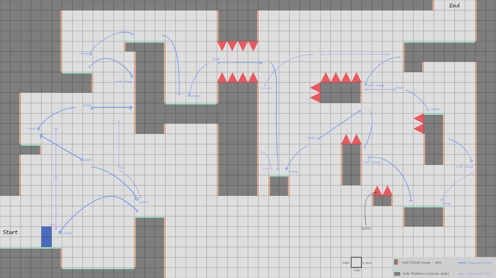

Level Design · Iteration · Player Psychology
Ubisoft
Game Design
Challenge 2026
Game Design
Challenge 2026
Concept
North Star
Every mechanic is discovered through interaction with the geometry alone.
Working Definition: What is a Tutorial?
The portion of a game that teaches the player fundamental systems dominant throughout play, until minimum viable play is achieved.
Three Design Philosophies: Derived from Studying Celeste
01
Uncertainty comes from information asymmetry, not difficulty
The player doesn't need to be punished to feel uncertain. They need to not know the rules yet. Celeste never makes the player feel incompetent. It makes them feel uninformed, then gives them the information through the level itself.
02
Feedback precedes demand
The geometry communicates what is required before it demands it. The ice block shakes before it falls. The platform signals danger before death is possible. The player reads consequence before experiencing it, so when danger arrives it feels earned, not arbitrary.
03
Stress tests confirm minimum viable play
A tutorial does not end when all mechanics are revealed. It ends when the player demonstrates they can use them under real pressure. Every Celeste tutorial section ends with a test, not an explanation.
Design Process
Five passes, each driven by a specific geometric failure. The recurring problem, a wall jump skip, took three consecutive passes to close. The solution was not adding complexity. It was removing the geometry that made the skip possible.
P 01
First Pass
The level was a stress test only. No discovery section existed.
Problems
Wall jump was introduced at the hardest moment in the level with no prior teaching. Dash had no isolated introduction before the combo sequence. Spike placement on platform 5 punished experimentation. The right wall at that point should have been an invitation to try, not a punishment for trying.
Resolution
Split the level into two deliberate sections: a consequence-free Playground where all three mechanics are discovered through geometry alone, followed by a Stress Test to confirm minimum viable play. Moved from freeform sketching to Photoshop on a 4K grid for dimensional accuracy.
P 02
Second Pass
Jump and Dash still lacked dedicated discovery moments.
Problems
The gap between platforms 0 and 1 had spikes below: falling was a death state, punishing the experimentation required to discover jump. A player could also bypass wall jump entirely by combining jump and dash across platforms 2 to 3, arriving at the stress test without having encountered the mechanic.
Resolution
Removed the spikes below the gap. Falling now returns the player to platform 0 with no penalty. The gap becomes a consequence-free experiment station. The geometry now teaches rather than punishes. Added a platform between 2 and 3 as a safe recovery surface to begin closing the wall jump skip.
P 03
Third Pass
The wall jump skip persisted through the playground.
Problem
A player could dash directly from the playground to platform 6, bypassing platforms 3 and 4 entirely, entering the stress test without having discovered wall jump. Unlike platform 3's overhang (which geometrically forced a wall jump regardless of approach), platform 6 had no equivalent inevitability.
Resolution Direction
Platform 6 must be raised beyond dash range, or a separate consequence-free wall jump moment must be added that is geometrically unavoidable regardless of the path taken. The specific fix to be determined in the next pass.
P 04
Fourth Pass
The skip moved. Platform 5 was reachable without wall jumping and had no geometric exit that forced it.
Problem
Platform 5 could be reached via a diagonal jump and dash from platform 2, bypassing platforms 3 and 4. Once on 5, the player could drop to platform 6 and enter the stress test. No geometric feature demanded wall jump at any point on this path. Crucially, nothing communicated to the player that they had missed a mechanic.
Resolution Direction
Platform 4 must be redesigned so that wall jump is the only viable exit, regardless of how the player arrived. Not by blocking access to platform 5, but by making wall jump unavoidable from it. The player arrives by any path. They leave only one way.
P 05
Fifth Pass · Resolved
Geometric inevitability achieved. Wall jump is un-skippable.
Resolution
Platform 4 was extended horizontally to block the diagonal jump path from platform 2. The player is now forced to dash horizontally to reach platform 3. From 3, the overhang of platform 4 above makes wall jump the only viable upward exit. The geometry demands it regardless of which path the player took through the playground. Two additional calibration passes adjusted all platform dimensions against recorded gameplay footage to ensure every gap and height matched Madeline's exact movement capabilities at 80x80 grid units.
Final Layout

Annotated 4K layout. Blue arrows show intended player paths. Green borders mark safe climb surfaces. Start bottom-left, End top-right.
Support Document